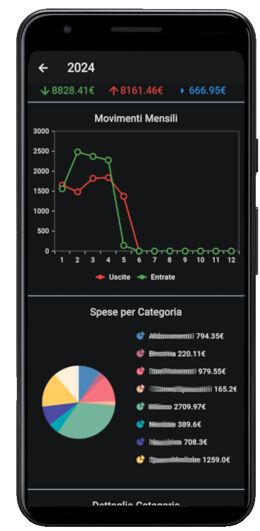

Stanco di app di gestione finanziaria complicate e confuse?
MoneyTrack è qui per te! Con la sua interfaccia intuitiva e le sue potenti funzioni, MoneyTrack ti aiuta a
prendere il controllo del tuo denaro come mai prima d'ora.
Monitorare le tue finanze ti permette di diventare consapevole di come spendi i tuoi soldi, aiutandoti a
identificare le aree di spesa eccessiva e a prendere decisioni finanziarie più informate e responsabili.
Inoltre, ti consente di eliminare le spese non necessarie, liberando risorse per raggiungere i tuoi
obiettivi finanziari.
In MoneyTrack ogni entrata e uscita viene identificata con un Bid, che rappresenta la componente
fondamentale dell'applicazione. I Bid sono la base su cui si fonda il sistema di gestione finanziaria di
MoneyTrack, offrendo diversi vantaggi:
Personalizzazione: Personalizza le Categorie di Entrate e Uscite, e gestisci le Spese
Ricorrenti Mensili con facilità.
Semplicità: Con pochi click, aggiungi un nuovo Bid e visualizza il tuo bilancio mensile
o annuale. Analizza le spese giornaliere, per categoria e la lista completa dei tuoi Bid.
Sicurezza: I tuoi dati rimangono al sicuro sul tuo dispositivo, garantendo che nessuno possa
accedere alle tue informazioni finanziarie personali.
Al primo avvio, MoneyTrack ti guiderà nella creazione delle tue categorie e delle tue spese ricorrenti. Non
preoccuparti, potrai sempre modificarle in seguito!
Aggiungi un Bid in qualsiasi momento: Ogni nuovo Bid verrà automaticamente registrato nel tuo bilancio,
permettendoti di consultare la tua situazione finanziaria mensile o annuale in tempo reale.
